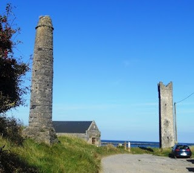

The Maiden Tower
The 60 foot high Maiden Tower is situated at the mouth of the Boyne Estuary just off the NorthWest end of Mornington beach. It was built during the reign of Queen Elizabeth I (some would say hence the name 'Maiden Tower') as a beacon to aid mariners on their way into Drogheda port. It was used as a landmark to mark the mouth of the Boyne and it is said that before the river walls were constructed in 1765, when a mariner brought his ship into line with the Tower and the Lady's Finger, the course of his ship marked the precise angle necessary to cross the bar. It also served as a look-out post during the Elizabethan Wars with Spain (1585-1603) to warn of any approaching enemy ships. The tower, the top of which is reached by spiral steps, commands a most extensive look-out over land and sea. It was originally brightly coloured, making it even more conspicuous and useful to mariners
The nearby Lady's Finger is a 13 meter-high solid obelisk-like tower which is believed to have been constructed much later than its companion, and was also used as a shipping beacon in past times. In between the two there also sits the Victorian Lifeboat station which closed in 1926 and is now a private dwelling.
Local legend has naturally grown up around the two buildings, adding to their history. The story goes that a young and very beautiful local woman had a lover who left to fight in a war overseas. Before he left, he told his sweetheart that he would return to her; if he survived it was on a ship with white sails, if he was killed his ship would return without him with black sails hoisted. Each day, for weeks the woman kept her constant and lonely vigil from the top of the tower for her lover to return. Months afterwards she spotted his ship on the horizon. Straining her vision to see the colour of the sails as the vessel came closer, it became clear to her that the sails were black. Overcome with grief she is said to have thrown herself off the top of the tower to her death. An obelisk was erected nearby in her memory which became known as "The Lady's Finger", reputedly because it represents the tragic young woman's finger bereft of her hoped-for wedding ring.